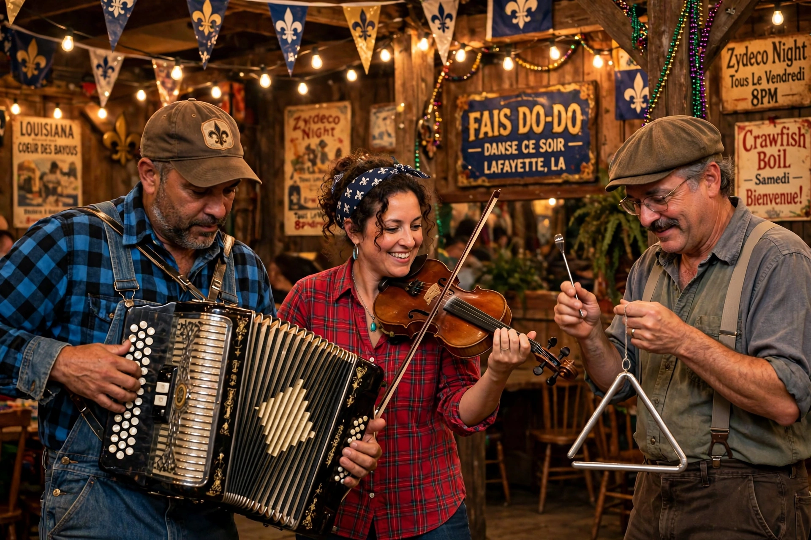

Cajun music is the traditional music of the Cajun people of French-speaking Acadiana in south Louisiana, rooted in the ballads and dance music of French Acadians exiled from Canada in the 18th century, blended with Spanish, Native American, German, Anglo-American and Afro-Creole influences.

Early Cajun music centred on fiddle duos singing in Cajun French. German immigrants brought the diatonic button accordion, which by the early 1900s led the sound. The first Cajun recording, Joe Falcon and Cléoma Breaux's 'Allons à Lafayette' (1928), began a commercial era. Amédé Ardoin, a Black Creole accordionist, profoundly shaped both Cajun and zydeco styles.
After a mid-century swing toward country styles, a Cajun cultural revival from the 1960s — championed by the Balfa Brothers and others — restored French lyrics and traditional line-ups. Dance forms are mainly two-steps and waltzes for fais do-do dances. Distinct from but neighbouring zydeco, the music of Black Creoles. Modern acts mix Cajun roots with rock and Americana. See Cajuns.